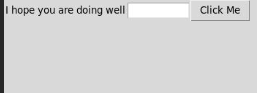
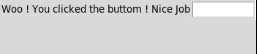
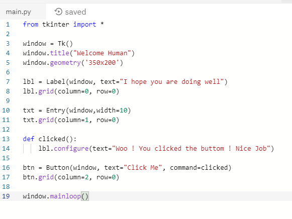

This is my Portfolio Page!
Here are the Projects I have made!
My first scratch game is called "Bust Down D-Money"
D-Money jumps on a trampoline on the moon like a game of pong. Try to keep D-Money on the trampoline and out of the lava.
We used block coding as a part of the program scratch to make the game. We initially had two sprites, D-Money and the trampoline. We later added two more sprites, the stars, which add extra points when D-Money touches them.
Lastly, we added music to our game to make it more fun.
My second game was made with MIT app inventor. My group made a GPA grade calculator that calculates an individual's GPA for one semester.
We also included A.P. classes as an option to more accurately calculate one's GPA.
My group used "list pickers" to organize the classes into groupings as well as to separate AP and honors classes from nomral classes.
Below I have shown a couple of images showing what the app looks like on a tablet as well as what the code looks like for the app.


My third game is called "Sinking Ship." It is a part of the interactive fiction lesson.
My partner, Aniket, and I made our interactive fiction story using Canopy. The plot of our story was associated with the "Quest" format.
We wrote "print" and then text for the program to repeat to the player after the player inserts a response to a question. We also used various if, then, elif statements to ask questions and create a pathway for the player to navigate through.


My fourth project is a simulation. The simulation originally shot fireworks in a typical fashion.
My group used a website called netlogo to edit the code.
We made it so the velocity of the fireworks move much slower after the initial particle explodes.
We divided the velocity in both the x and y axis by one thousand thus decreasing its speed.
Now the fireworks move much slower after exploding and most of the particles move downward almost immediately.

Below are images from my next project. I made GUI changes using Tkinter.
I was able to use repl.it/languages/tkinter
This way I was able to use tkinter in my browser since I wasn't able to download any programs onto my computer.
The program I created first states "I hope you are doing well". Then it tells you to click the button.
Once you click the button, the program says "Woo! You clicked the buton! Nice job"
I was able to use Tkinter to create this graphic user interface or GUI.
 
